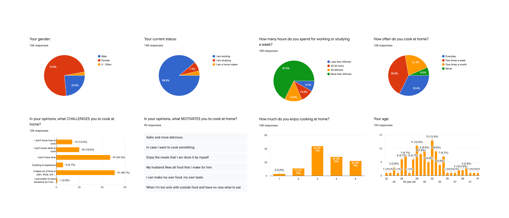
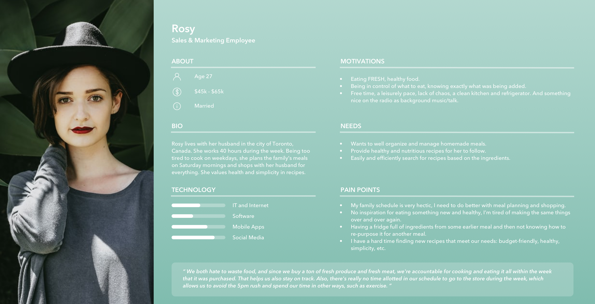
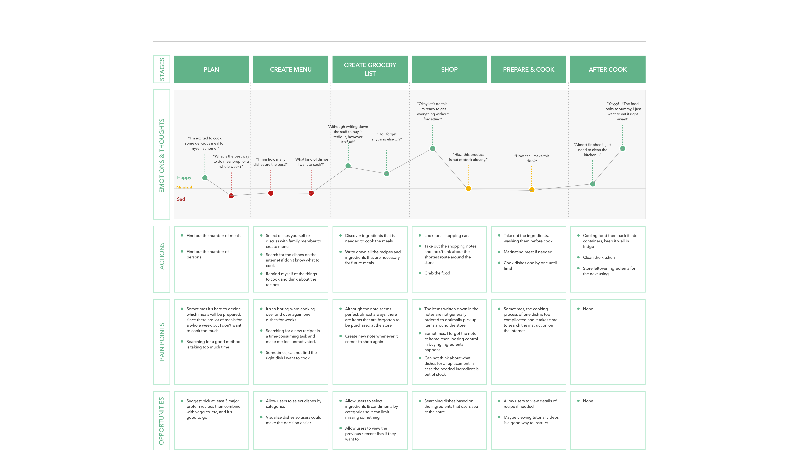
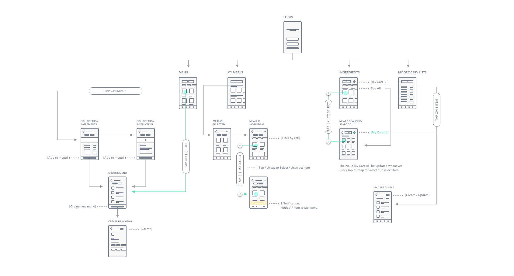
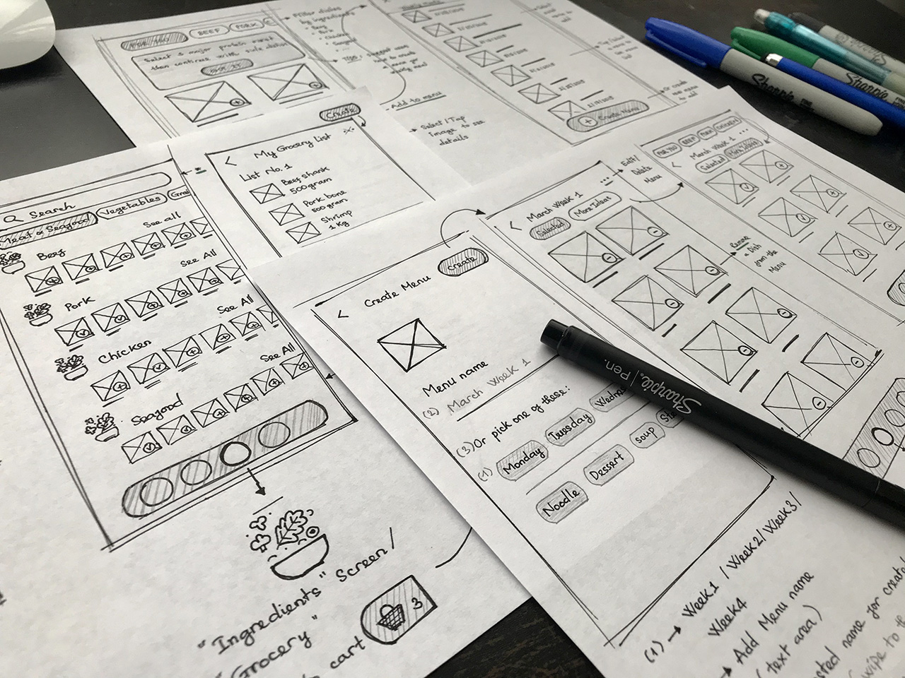
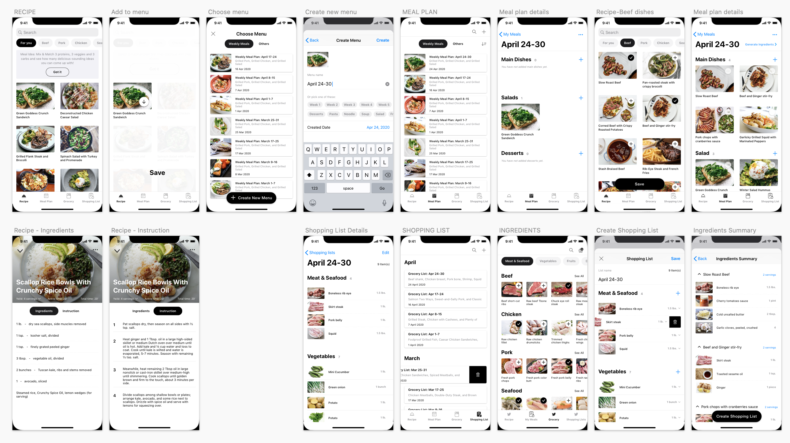
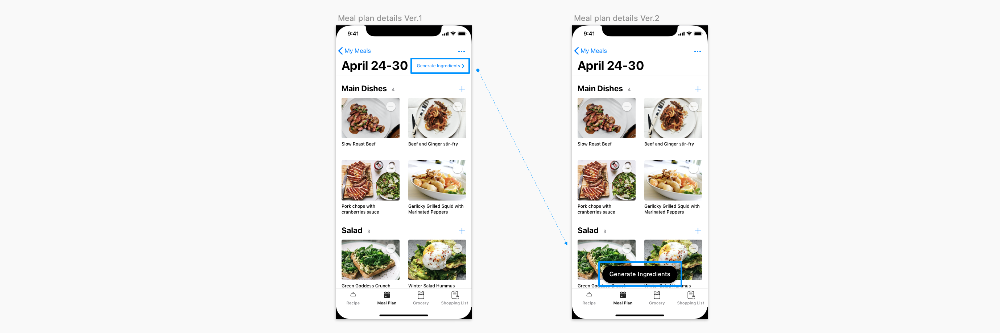
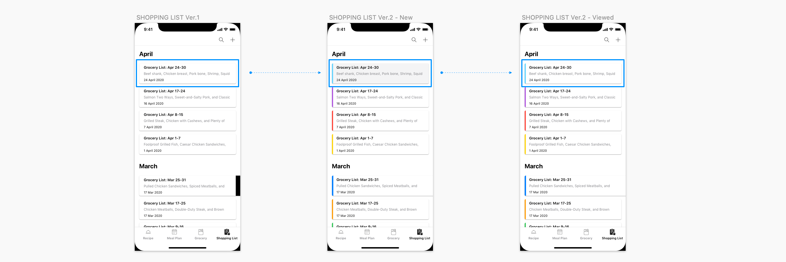

Weekly Meal Prep
A Personal Journey from Problem to Product
Introduction
I was inspired to create this app after having conversation with my friends when we shared our cooking routines. I realized that making meals for dinner every night was a challenge to most of us while we usually have a hectic schedule and commonly coming home late after work. There were several times I found myself staring into the fridge searching for cooking inspiration, but after a long day at work, the creativity was not on top. The idea of preparing meals for a whole week ahead of schedule seems a benefit for most people in this case. It’s especially good for busy people when it comes to time-matter and healthy eating plans.
The process
User research
User survey
I started this user research with the assumption that the target users will be young people. They are students or professional working persons who live in big cities and have an active life. I developed a survey with Google Forms then distributed it among multiple groups of the working profession on Facebook and Whatsapp. The purpose was to define:
- Users' cooking habits
- What motivates them to cook at home on daily basis
- The pain points if have during their cooking process.
The survey includes 8 questions and had completed by 108 people that provided me the quantitative data needed to validate my assumptions.
Users occupation and their cooking habit
More than 70% of people who did the survey are office staff and students in the range of 25-35 years old. They usually spend 20-40 hours or more per week working and studying. But they still try to cook meals from several times to once a day per week.
Motivations
Around 85% of them enjoy cooking at home for some reasons: cost-saving, healthy meals, having dinner with family, etc.
- "It's safe and hygiene. I also can customize the ingredients based on my taste."
- "It's healthy and saving a lot. I feel pleasure while cooking and enjoying the food I cooked."
- "It’s better and safer than eating out, besides I can improve my cooking skills."
- "It's cost-effective and I can cook authentic dishes which I could not easily find in the nearby restaurants."
Painpoints
Throughout the cooking process, the most common problems that people face are:
- 48% of participants takes a lot of time to plan, shop, prepare, and cook
- 44% doesn't have much time for cooking
- 13-19% doesn't know what to cook & how to cook
User interview
- To get more qualitative insights about people home cooking process, I conducted user interview with five people based on the following questions:
- How do you create a meal plan?
- Can you describe your food preparation and cooking process?
- What does your grocery shopping list look like?
- 3/5 do meal preparation and cook right after they get home from the grocery stores. 2/5 do meal preparation, keep it well in the fridge, and cook later on weekdays.
- Some of them use the "Note" to create grocery lists, while, others use a piece of paper to do it. These shopping lists are about to keep them stay on track and avoid wasting food.
- To prepare meals for a week, people tend to pick around three major protein dishes to start. Then combine each of them with veggies, fruit, etc. to balance their meals.
- They google cooking instructions or watch tutorial videos on Youtube if they want to try new recipes.
User persona
Based on the information collected from the survey and interviews, I am now able to create a user persona in order to focus on the target users, ROSY.
User journey map
Next, I created a journey map to visualize some stages she needs to take, better understand her pain points, expectations, emotion during the journey, and find out the opportunities to gain her experience.
Phase 2. Ideate
I created an app map to see how the navigation of the app should be structured. I wanted to identify where content will be placed in order to get the overview of screens as well as the relationship between them in a system.
During the early stages of the design process, I drew paper wireframes and reviewed them several times before going to computer works. By this way, issues are caught earlier. I learnt that I was in started identifying minor and larger issues much sooner than I thought about it before.
Phase 3. Design, Test, Iterate
Low fidelity wireframe
When paper wireframing was relatively good, I started to transfer these sketches to mid-fidelity of the layouts, using the 8x8 grid system to maintain consistency of elements and balance the design's hierarchy.
The design aimed to do two things
- Helps users create a meal plan then based on that meal plan, they can generate the corresponding Gocery List to shop ingredients.
- Helps users get more cooking inspiration as well as provides them more helpful recipes to follow.
High fidelity wireframe
Usability test
I took these layouts and tested with 5 users, asking them to complete 2 tasks:
- Create a meal plan for a week that includes main corses, salad, fruit or dessert then generate the appropriate grocery list for ingredients shopping.
- Create a new grocery shopping list in case you had a ready Meal Plan in your mind already.
By watching them navigate the app, also listening their concerns, I realized there are two common things made them quite confuse.
Problem #1: Users did not pay attention much to Generate Ingredients feature.
When users finished adding dishes to create a Meal Plan, at MEAL PLAN DETAILS screen, instead of Generate Ingredients right away in order to quickly create Grocery Shopping List, most of them have a tendency to switch to GROCERY to pick the essential ingredients. It meant the action [Generate Ingredients] was ignored. Users did not pay attention much to that fucntion. As they said, since it's too small to catch the eyes.
=> Solution: Move [Generate Ingredients] to the bottom of screen and transformed it to an actionable button. This way, users were instructed what's the next step was supposed to do.
Problem #2: Users were confuse about which shopping list was the one they had just created.
After finished creating a grocery shopping list, users didn't know exactly wether the list they had just created was saved sucessfully or not? Since there wasn't different at all from the old items with the new one. The layout was just basically black and white and the new one just looks the same as others.
=> Solution: Use indication colors to distinguish the items in the list. Besides, highlighted the one that has been creating, unless users tap to see it.
Results
- 100% of users noticed and used the "Generate Ingredients" button.
- 4/5 users explicitly mentioned the improved visibility and clarity of the grocery list feature.
- No more confusion about distinguishing the new list from old ones.
Prototype
Takeaways
It was really rewarding to create a solution to a problem on my own. I got to navigate almost all of the UX process solo and learn my strengths and weaknesses along the way. Understanding the UX process through a user-centered lens has given me a great amount of information needed to design apps with the user in mind by understanding the motivations and desires of them.